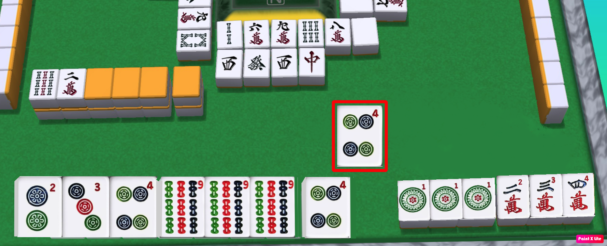

في هذا المثال ، سحب اللاعب رقم 4 من الدوائر ، وتم دمج كل قطعه هل يمكنه الفوز بهذه اليد؟

لا لأن يده مفتوحة ولم يكمل طريقة الفوز
للأيدي المفتوحة - الطريقة الأسهل والأكثر استخدامًا للفوز تسمى "تانياو" ، وهي ألا تحتوي على أرقام 1 و 9. نظرًا لوجود 1 و 9 في هذا المثال ، فإنه يحتاج إلى اختيار طريقة فوز أخرى.
الطريقة التالية الأسهل للفوز هي "Yakuhai" - وهي الحصول على مجموعة واحدة على الأقل من التنانين أو الاتجاهات. هذا اللاعب ليس لديه أي تنانين أو اتجاهات ، ومن سوء حظه أنه لم يتمكن من إكمال أي من طرق الفوز الأخرى. هناك الكثير ، لذا انتقل إلى الأسئلة التالية لمزيد من الأمثلة.